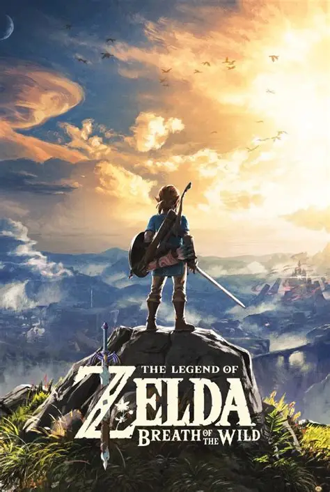
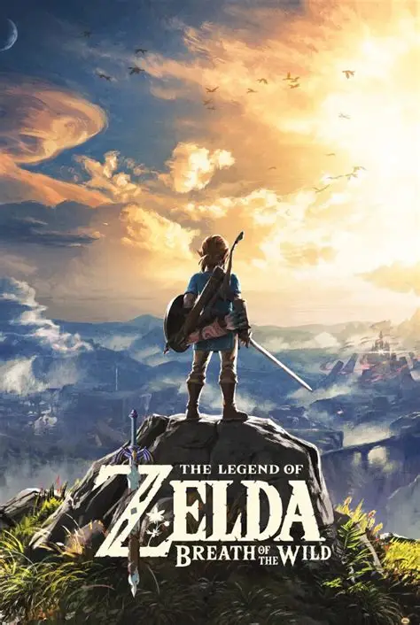

Bem-vindos ao PlayPortal!
Sobre o PlayPortal: O PlayPortal é um projeto de demonstração feito para mostrar, na prática, os principais conceitos do desenvolvimento web — tudo isso dentro do universo dos videogames. Pense nele como uma estante digital pessoal: um jeito fácil e visual de explorar jogos, conhecer seus detalhes e descobrir novos gêneros para se aventurar.
No PlayPortal, você encontra:
- Catálogo de jogos: Uma seleção organizada com diversos títulos, recomendações e informações detalhadas.
- Avaliações e características: Detalhes como gênero, plataforma, estilo de gameplay e os pontos fortes de cada título.
- Atualizações constantes: Novas sugestões e conteúdos entram o tempo todo para manter você por dentro das novidades.
Destaques

 
